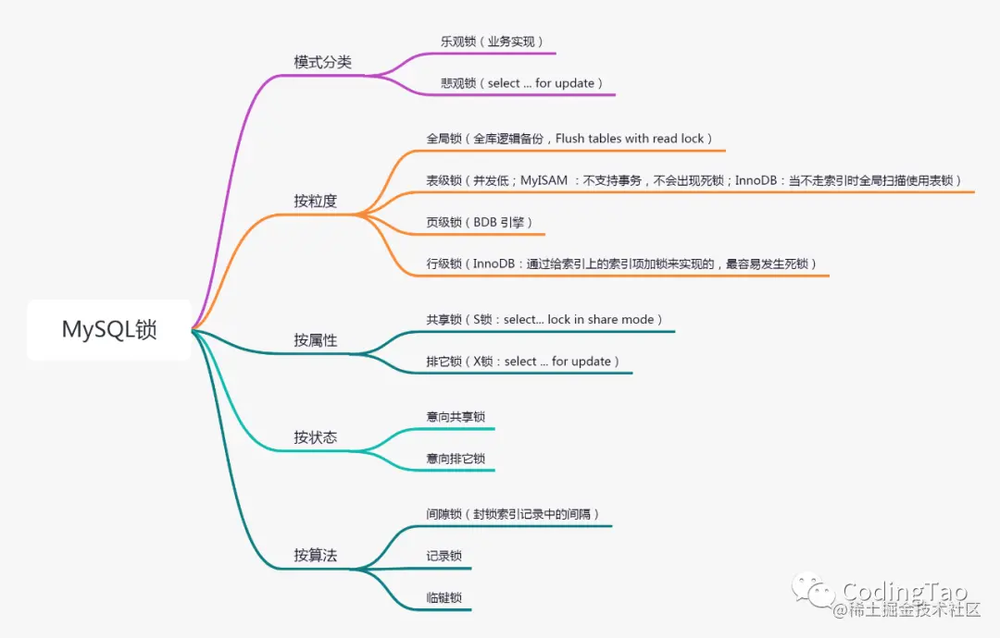
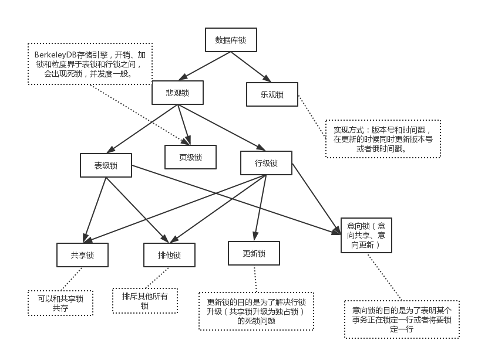
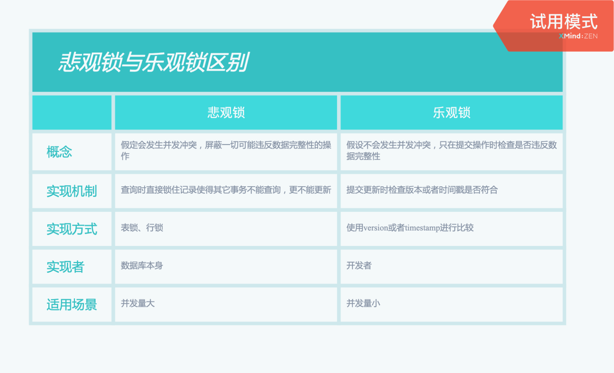
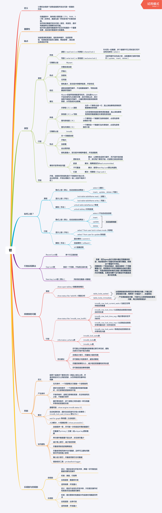

前言
锁是并发编程中访问同一资源的同步机制，保证了数据的一致性和有效性
前面的文章提到数据库事务的 ACID 特性和 4 个隔离级别，这次来看看如何用锁实现事务的隔离性
按类型分

乐观锁
1. 概念
假设一般数据不会发生冲突，只有在提交时才会检测，如发现冲突会通知用户
2. 应用场景
读多写少的情况，如有大量的读操作，冲突的可能性会大大提高，效率会大大降低
3. 实现方式
一般使用数据版本记录机制实现，在表中添加一个 version 字段，读数据时将 version 一并读出，数据每更新一次，version + 1。 提交数据时和第一次取出的 version 对比，不同则说明冲突
悲观锁
1. 概念
悲观锁，正如其名，具有强烈的独占和排他特性，每次去拿数据的时候都认为别人会修改，对数据被外界（包括本系统当前的其他事务，以及来自外部系统的事务处理）修改持保守态度，因此，在整个数据处理过程中，将数据处于锁定状态。
2. 应用场景
适用于并发量不大，写操作频繁的场景
3. 实现方式
在MySQL中使用悲观锁，必须关闭MySQL的自动提交，set autocommit=0。共享锁和排它锁是悲观锁的不同的实现，它俩都属于悲观锁的范畴。
按粒度分
锁粒度\(\uparrow\)，锁冲突概率\(\uparrow\)，死锁概率\(\downarrow\)，加锁的开销\(\downarrow\)（需要维护的锁少），但并发性能\(\downarrow\)
以下按照锁粒度从高到低的顺序介绍
全局锁
1. 概念
对整个数据库进行加锁
2. 应用场景
全库逻辑备份（mysqldump）
3. 实现方式
MySQL
提供了一个加全局读锁的方法，命令是Flush tables with read lock(FTWRL)。
此时其他操作会被堵塞
4. 问题
如果在主库上更新：备份期间业务基本都暂停
如果在从库上更新：备份期间不能执行主库同步来的 binlog，会导致主从延迟
5. 解决方案
mysqldump使用参数--single-transaction，启动一个事务，确保拿到一致性视图。而由于MVCC的支持，这个过程中数据是可以正常更新的。
表级锁
1. 概念
对整张数据表进行加锁
2. 应用场景
MyISAM 使用表级锁，InnoDB 如果不走索引的话也是用表级锁
3. 实现方式
lock tables … read/write
页级锁
1. 概念
页级锁是 MySQL 中锁定粒度介于行级锁和表级锁中间的一种锁。表级锁速度快，但冲突多，行级冲突少，但速度慢。因此，采取了折衷的页级锁，一次锁定相邻的一组记录。
2. 应用场景
BDB 引擎支持页级锁。
行级锁
1. 概念
行级锁是粒度最低的锁，发生锁冲突的概率也最低、并发度最高。但是加锁慢、开销大，容易发生死锁现象。
2. 应用场景
MySQL中只有 InnoDB 支持行级锁，其在走索引的情况下都是用行级锁
3. 实现方式
在MySQL中，行级锁并不是直接锁记录，而是锁索引。索引分为主键索引和非主键索引两种，如果一条sql语句操作了主键索引，MySQL就会锁定这条主键索引；如果一条语句操作了非主键索引，MySQL会先锁定该非主键索引，再锁定相关的主键索引。在UPDATE、DELETE操作时，MySQL不仅锁定WHERE条件扫描过的所有索引记录，而且会锁定相邻的键值，即所谓的next-key locking。
按属性分
共享锁（S 锁）
1. 概念
共享锁（Shared lock），右称读锁，当事务 A 对数据加上读锁后，其他事务就只能再加读锁，不能修改数据，只有读锁都释放后，才可以加写锁
2. 应用场景
共享锁主要是为了支持并发的读取数据而出现的，读取数据时，不允许其他事务对当前数据进行修改操作，从而避免“不可重读”的问题的出现。
3. 实现方式
select … lock in share mode
排它锁（X 锁）
1. 概念
排他锁（Exclusive lock），又称写锁，事务加上写锁后，其他事务既不能读也不能写，也不可以加任何锁，只有当前锁被释放了才可以
注：MySQL InnoDB 引擎默认
update,delete,insert都会自动给涉及到的数据加上排他锁，select语句默认不会加任何锁类型。
2. 应用场景
写锁主要是为了解决在修改数据时，不允许其他事务对当前数据进行修改和读取操作，从而可以有效避免“脏读”问题的产生。
3. 实现方式
select …for update
按状态分
需要强调一下，意向锁是一种不与行级锁冲突表级锁，可以实现行级锁和表级锁共存
当事务 A 有行锁时，MySQL 会自动添加意向锁，事务 B 如果要申请整个表的锁，不需要一行行看，而是直接判断有无意向锁，增强性能
- 意向共享锁（intention shared lock, IS）：事务有意向对表中的某些行加共享锁（S锁）
-- 事务要获取某些行的 S 锁，必须先获得表的 IS 锁。
SELECT column FROM table ... LOCK IN SHARE MODE;- 意向排他锁（intention exclusive lock, IX）：事务有意向对表中的某些行加排他锁（X锁）
-- 事务要获取某些行的 X 锁，必须先获得表的 IX 锁。
SELECT column FROM table ... FOR UPDATE;即：意向锁是有数据引擎自己维护的，用户无法手动操作意向锁，在为数据行加共享 / 排他锁之前，InnoDB 会先获取该数据行所在在数据表的对应意向锁。
| 意向共享锁（IS） | 意向排他锁（IX） | |
|---|---|---|
| 意向共享锁（IS） | 兼容 | 兼容 |
| 意向排他锁（IX） | 兼容 | 兼容 |
意向锁之间时互相兼容的，但是它会与普通的排他 / 共享锁互斥
| 意向共享锁（IS） | 意向排他锁（IX） | |
|---|---|---|
| 共享锁（S） | 兼容 | 互斥 |
| 排他锁（X） | 互斥 | 互斥 |
注：这里的排他/共享锁指的都是行锁！！！意向锁不会与行级的共享 / 排他锁互斥！！！
例子：
事务 A 先获取了某一行的排他锁，并未提交：
SELECT * FROM users WHERE id = 6 FOR UPDATE;事务 A 获取了 users 表上的意向排他锁。
事务 A 获取了 id 为 6 的数据行上的排他锁。
之后事务 B 想要获取 users 表的共享锁：
LOCK TABLES users READ;事务 B 检测到事务 A 持有 users 表的意向排他锁。
事务 B 对 users 表的加锁请求被阻塞（排斥）。
最后事务 C 也想获取 users 表中某一行的排他锁：
SELECT * FROM users WHERE id = 5 FOR UPDATE;事务 C 申请 users 表的意向排他锁。
事务 C 检测到事务 A 持有 users 表的意向排他锁。
因为意向锁之间并不互斥，所以事务 C 获取到了 users 表的意向排他锁。
因为id 为 5 的数据行上不存在任何排他锁，最终事务 C 成功获取到了该数据行上的排他锁。
按算法分
记录锁、间隙锁、临键锁都是排它锁，而记录锁的使用方法跟排它锁介绍一致。
记录锁
记录锁是 封锁记录，记录锁也叫行锁，例如：
SELECT * FROM `test` WHERE `id`=1 FOR UPDATE;它会在 id=1 的记录上加上记录锁，以阻止其他事务插入，更新，删除 id=1 这一行。
间隙锁
间隙锁 是 Innodb 在 RR（可重复读）隔离级别 下为了解决幻读问题时引入的锁机制。间隙锁是 Innodb 中行锁的一种。
请务必牢记：使用间隙锁锁住的是一个区间，而不仅仅是这个区间中的每一条数据。
举例来说，假如 emp 表中只有 101 条记录，其 empid 的值分别是 1,2,...,100,101，下面的 SQL：
SELECT * FROM emp WHERE empid > 100 FOR UPDATE当我们用条件检索数据，并请求共享或排他锁时，InnoDB 不仅会对符合条件的 empid 值为 101 的记录加锁，也会对 empid 大于 101（这些记录并不存在）的“间隙”加锁。
这个时候如果你插入 empid 等于 102 的数据的，如果那边事物还没有提交，那你就会处于等待状态，无法插入数据。
临键锁
临键锁，是记录锁与间隙锁的组合，它的封锁范围，既包含索引记录，又包含索引区间。
注：临键锁的主要目的，也是为了避免幻读（Phantom Read）。如果把事务的隔离级别降级为RC，临键锁则也会失效。
总结
